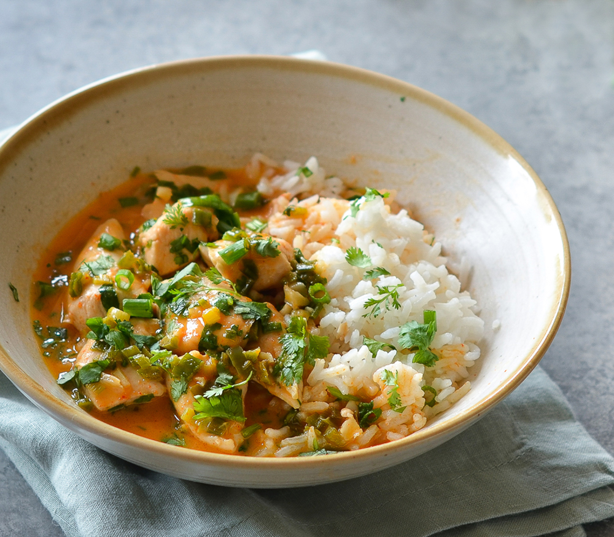

How to make thai chicken curry with coconut milk

What is Curry?
A curry is a dish with a sauce seasoned with spices, mainly associated with South Asian cuisine. In southern India, leaves from the curry tree may be included.
What are the ingredients needed to make Thai Chicken Curry with coconut milk
- Boneless skinless chicken breasts or boneless skinless thighs
- Red bell peppers
- White or yellow onion
- Yellow curry powder
- Red curry paste
- Crushed red pepper flakes
- Unsweetened coconut milk
- Corn starch
What are the steps?
- Take out a large skillet and add to it the chicken, peppers, and onions. Drizzle with oil and turn the burner up to medium high heat. Stir everything around and cook for 6-8 minutes, cooking chicken just through.
- Next, sprinkle the yellow curry powder over all of the chicken and veggies, and stir to coat that for another minute. Then, add the coconut milk, red curry paste, crushed red pepper flakes and the salt. Stir, then let the mixture come to a low boil.
- In a small bowl, whisk together the cornstarch and the water until the corn starch is dissolved. Add that mixture to the pan and stir it into the coconut milk and spices to achieve a thicker broth. Stir for 1-2 minutes while it thickens.
- Give the dish a taste and add more salt if needed. I like to serve this nice and piping hot over rice or noodles and of course, with that fresh herb garnish. For this healthy Thai chicken recipe, I usually garnish with lots of fresh cilantro and extra lime wedges for squeezing.
Main menu